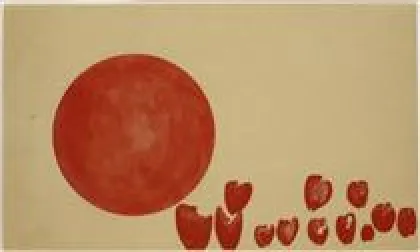

<!DOCTYPE html>
<html lang="fr" x-data="{menuIsOpen: false}" :class="{noscroll:menuIsOpen,}"></html>
<html lang="fr">
<head>
    <meta charset="UTF-8">
    <meta http-equiv="X-UA-Compatible" content="IE=edge">
    <meta name="viewport" content="width=device-width, initial-scale=1.0">
    <title>Daay'o</title>
    <script defer src="https://unpkg.com/alpinejs"></script>
    <link rel="stylesheet" href="../src/css/style.css">
    
</head>
<body>

    <header>

        <button aria-controls="mainNav" @click="menuIsOpen = ! menuIsOpen"
        class="header__icone--menu-burger">
        
        </button>
        <nav
        id="mainNav" x-show="menuIsOpen" x-transition.duration.800ms class="menu">

        <ul>
            <li><a class="menu__list" href="./serguei_paradjanov.html">Sergueï paradjanov</a></li>
            <li><a class="menu__list" href="./leonid_sejka.html">Leonid Sejka</a></li>
            <li><a class="menu__list" href="./robert_rauschenberg.html">Robert Rauschenberg</a></li>
            <li><a class="menu__list" href="./jospeh_beuys.html">Joseph Beuys</a></li>
            <li><a class="menu__list" href="./billeterie.html"> Billetterie</a></li>
        </ul>
        </nav>

        <a href="../en/home_page.html">
            
        </a>

        <a href="./index.html"><h1 class="header__nom--site">Daay'o</h1></a>

    </header>

    <div>
        
        <h2 class="titre__article--joseph">Joseph Beuys</h2>
    </div>

    <main>

         <section class="block__article">

                <h2 class="titre__page-article-joseph">Sa vie</h2>
    
                <p class="text__page-article-joseph">
                    Né le 12 mai 1921 à Krefeld, Joseph Beuys apprend à jouer du violoncelle dès son plus jeune âge, puis il intègre les jeunesses hitlériennes en 1936. 
                </p>
    
                <p class="text__page-article-joseph">
                    Élève médiocre mais s'intéressant aux animaux, il découvre la photographie animalière. Il quitte l'école sans diplôme. 
                </p>
    
                <p class="text__page-article-joseph">
                    En 1939, il travaille dans un cirque, entre autres à nourrir les animaux. En 1941, 
                    il s'engage volontairement dans la Luftwaffe pour 12 ans, et devient sous-officier mitrailleur à bord des STUKA Ju 80 sur le front russe, en Crimée. 
                </p>
    
                <p class="text__page-article-joseph">
                    Son avion rate la piste d'atterrissage qui était enneigée, en Ukraine en mars 1944. Il est blessé, le nez cassé, et son pilote est mort. 
                    Immédiatement récupéré par la Luftwaffe, puis après un mois de convalescence,
                    il est muté à Hambourg dans les commandos parachutistes dans la division Erdmann avec laquelle il combat et se rend aux troupes britanniques le 8 mai 1945. 
                </p>
    
                <p class="text__page-article-joseph">
                    Il est prisonnier jusqu'en août 1945. Il ne reçoit aucun brevet de médaille militaire.
                </p>

                <p class="text__page-article-joseph">
                    Il reste pendant toute sa vie en relation étroite avec d'anciens militaires et officiers SS, comme Karl Fastabend, 
                    qui forment un groupe soudé de collectionneurs, de défenseurs de l'œuvre de Beuys et fondateurs de son parti politique.               
                 </p>
    
          </section>

          <section class="block__article">

            <h2 class="titre__page-article-joseph">articles sur différentes oeuvre qu'a produit Joseph Beuys</h2>

            <h3 class="description__oeuvre">Easter</h3>
            
            <h3 class="description__oeuvre-date">1951-1952</h3>
            <a href="./serguei_oeuvre_easter.html"><p class="redirection__page-oeuvre">Cliquez ici pour en décourvir plus sur l'oeuvre</p></a>

            <h3 class="description__oeuvre">Hearts of the Revolutionaries: Passage of the Planets of the Future</h3>
            
            <h3 class="description__oeuvre-date">1955</h3>
            <a href="./serguei_oeuvre_pieta.html"><p class="redirection__page-oeuvre">Cliquez ici pour en décourvir plus sur l'oeuvre</p></a>

        </section>


    </main>


    <footer>

        <a href="./index.html"><h1 class="footer__nom-site">Daay'o</h1></a>

        <ul>
            
            <li class="footer__pages-annexes">
                <a href="./a_propos.html">A propos</a>
            </li>

            <li class="footer__pages-annexes">
                <a href="./contact.html">Contact</a>
            </li>
        </ul>

        <ul class="footer__reseaux">
            <li>
                <a href="">
                    </a>
            </li>

            <li>
                <a href="">
                    </a>
            </li>

            <li>
                <a href="">
                    </a>
                </li>
        </ul>

        <a class="footer_mailto" href="">event-daayo@gmail.com</a>

        <p class="footer__copyright">Copyright © 2023-Faris Halepovic-MMi 1A2 Montbéliard</p>

    </footer>
    
</body>
</html>